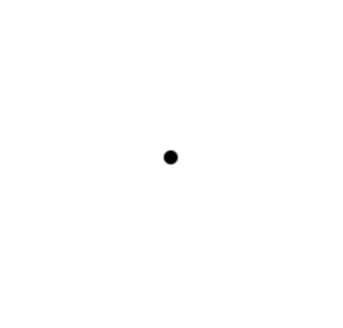
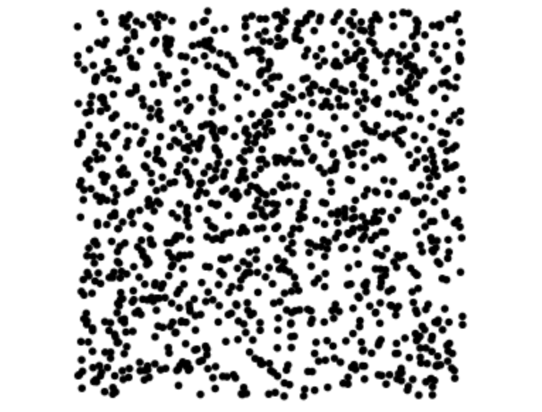

Your task is to identify the direction of a small portion of moving dots in a sea of random dots.
In each trial, you will stare fixated at a small dot.

Keep your focus on the dot!
After a brief distraction, you will see a sea of dots.

As quickly as you can, decide if a cluster of the stars are moving to the left or right.
and
Press the corresponding arrow key when you decide. Act quickly!